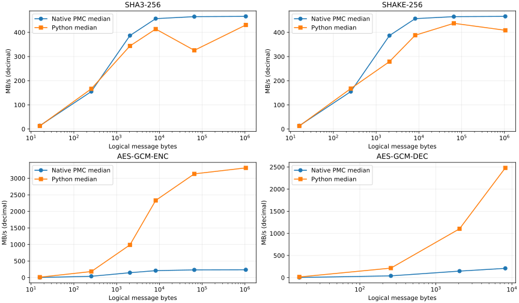
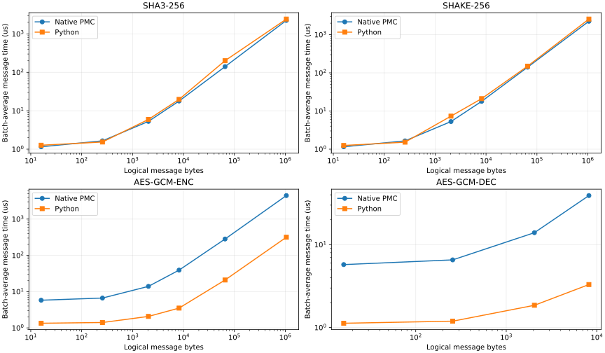
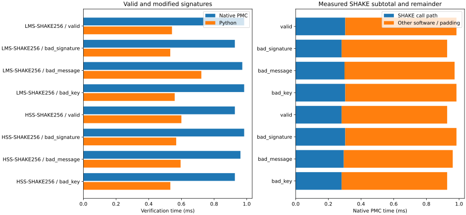

Validated resident-buffer DMA/crypto batches. Best is the fastest of three measured batches; median is shown alongside it.
Measured: 2026-10-25T12:53:38.371937+00:00
PMC cycle rate: 243.647 MHz against nominal 100 MHz PL reference.
Hardware: VALIDATED; stock recovery: DONE=1 ERROR=0


| Algorithm | Bytes | PMC payload MB/s | PMC payload Gb/s | PMC message us | Python message us | Derived bulk DMA MB/s |
|---|---|---|---|---|---|---|
| SHA3-256 | 16 | 13.82 | 0.111 | 1.158 | 1.268 | 13.82 |
| SHA3-256 | 256 | 155.15 | 1.241 | 1.650 | 1.539 | 155.15 |
| SHA3-256 | 2048 | 386.81 | 3.094 | 5.295 | 5.956 | 386.81 |
| SHA3-256 | 8192 | 456.95 | 3.656 | 17.928 | 19.794 | 456.95 |
| SHA3-256 | 65536 | 465.15 | 3.721 | 140.893 | 201.242 | 465.15 |
| SHA3-256 | 1048576 | 466.27 | 3.730 | 2248.857 | 2434.821 | 466.27 |
| SHAKE-256 | 16 | 13.82 | 0.111 | 1.158 | 1.251 | 13.82 |
| SHAKE-256 | 256 | 155.15 | 1.241 | 1.650 | 1.527 | 155.15 |
| SHAKE-256 | 2048 | 386.81 | 3.094 | 5.295 | 7.341 | 386.81 |
| SHAKE-256 | 8192 | 456.95 | 3.656 | 17.928 | 21.105 | 456.95 |
| SHAKE-256 | 65536 | 465.15 | 3.721 | 140.893 | 149.788 | 465.15 |
| SHAKE-256 | 1048576 | 466.27 | 3.730 | 2248.857 | 2565.586 | 466.27 |
| AES-GCM-ENC | 16 | 2.76 | 0.022 | 5.791 | 1.341 | 5.53 |
| AES-GCM-ENC | 256 | 38.53 | 0.308 | 6.645 | 1.407 | 77.05 |
| AES-GCM-ENC | 2048 | 146.72 | 1.174 | 13.959 | 2.073 | 293.44 |
| AES-GCM-ENC | 8192 | 208.98 | 1.672 | 39.200 | 3.513 | 417.96 |
| AES-GCM-DEC | 16 | 2.78 | 0.022 | 5.750 | 1.126 | 5.57 |
| AES-GCM-DEC | 256 | 39.06 | 0.312 | 6.555 | 1.193 | 78.11 |
| AES-GCM-DEC | 2048 | 146.72 | 1.174 | 13.959 | 1.856 | 293.44 |
| AES-GCM-DEC | 8192 | 209.24 | 1.674 | 39.151 | 3.302 | 418.48 |
| AES-GCM-ENC-STREAM | 65536 | 232.04 | 1.856 | 282.433 | 20.905 | 464.08 |
| AES-GCM-ENC-STREAM | 1048576 | 235.53 | 1.884 | 4452.068 | 316.240 | 471.05 |
| Algorithm | Bytes | PMC median MB/s | PMC best MB/s | Python median MB/s | PMC median us | Previous soft CPU us | Check |
|---|---|---|---|---|---|---|---|
| SHA3-256 | 16 | 13.82 | 13.82 | 12.62 | 1.158 | 23.212 | MATCH |
| SHA3-256 | 256 | 155.15 | 155.15 | 166.37 | 1.650 | 23.427 | MATCH |
| SHA3-256 | 2048 | 386.81 | 386.81 | 343.85 | 5.295 | 27.104 | MATCH |
| SHA3-256 | 8192 | 456.95 | 456.95 | 413.86 | 17.928 | Different size | MATCH |
| SHA3-256 | 65536 | 465.15 | 465.15 | 325.66 | 140.893 | Different size | MATCH |
| SHA3-256 | 1048576 | 466.27 | 466.27 | 430.66 | 2248.857 | Different size | MATCH |
| SHAKE-256 | 16 | 13.82 | 13.82 | 12.79 | 1.158 | 23.233 | MATCH |
| SHAKE-256 | 256 | 155.15 | 155.15 | 167.67 | 1.650 | 23.445 | MATCH |
| SHAKE-256 | 2048 | 386.81 | 386.81 | 278.99 | 5.295 | 27.128 | MATCH |
| SHAKE-256 | 8192 | 456.95 | 456.95 | 388.15 | 17.928 | Different size | MATCH |
| SHAKE-256 | 65536 | 465.15 | 465.15 | 437.53 | 140.893 | Different size | MATCH |
| SHAKE-256 | 1048576 | 466.27 | 466.27 | 408.71 | 2248.857 | Different size | MATCH |
| AES-GCM-ENC | 16 | 2.76 | 2.76 | 11.93 | 5.791 | 57.376 | MATCH |
| AES-GCM-ENC | 256 | 38.53 | 38.53 | 181.97 | 6.645 | 58.091 | MATCH |
| AES-GCM-ENC | 2048 | 146.72 | 146.72 | 988.13 | 13.959 | 65.455 | MATCH |
| AES-GCM-ENC | 8192 | 208.98 | 208.98 | 2332.04 | 39.200 | Different size | MATCH |
| AES-GCM-DEC | 16 | 2.78 | 2.78 | 14.21 | 5.750 | 51.484 | MATCH |
| AES-GCM-DEC | 256 | 39.06 | 39.06 | 214.60 | 6.555 | 52.200 | MATCH |
| AES-GCM-DEC | 2048 | 146.72 | 146.72 | 1103.51 | 13.959 | 59.562 | MATCH |
| AES-GCM-DEC | 8192 | 209.24 | 209.24 | 2481.07 | 39.151 | Different size | MATCH |
| AES-GCM-ENC-STREAM | 65536 | 232.04 | 232.04 | 3134.87 | 282.433 | Different size | MATCH |
| AES-GCM-ENC-STREAM | 1048576 | 235.53 | 235.53 | 3315.77 | 4452.068 | Different size | MATCH |
Same pinned AMD SHAKE vectors: n=32, tree height 5, Winternitz 2; one-level HSS. 24 timed batches, six malformed-input guards and ten SHAKE padding known-answer tests. Runtime verification is not secure-boot enforcement.

| Method | Case | Native us | Native verifies/s | Python us | Previous soft CPU us | SHAKE calls | Decision |
|---|---|---|---|---|---|---|---|
| LMS-SHAKE256 | valid | 984.07 | 1016.2 | 542.36 | 12597.81 | 200 | ACCEPT |
| LMS-SHAKE256 | bad_signature | 927.04 | 1078.7 | 531.76 | 11763.07 | 185 | REJECT |
| LMS-SHAKE256 | bad_message | 972.68 | 1028.1 | 721.98 | 12418.29 | 197 | REJECT |
| LMS-SHAKE256 | bad_key | 984.07 | 1016.2 | 558.91 | 12597.65 | 200 | REJECT |
| HSS-SHAKE256 | valid | 927.14 | 1078.6 | 599.87 | 11838.85 | 185 | ACCEPT |
| HSS-SHAKE256 | bad_signature | 984.14 | 1016.1 | 568.20 | 12642.40 | 200 | REJECT |
| HSS-SHAKE256 | bad_message | 961.34 | 1040.2 | 594.99 | 12314.79 | 194 | REJECT |
| HSS-SHAKE256 | bad_key | 927.14 | 1078.6 | 532.25 | 11838.87 | 185 | REJECT |
Capture: C:\aiup\sec35\fast\runs\20261025T125241220\results.txt
Capture SHA256: 9ee261c698993f2334fa95f599b19c549cdcd91a2c0de4daef5aaaefc7227fbd